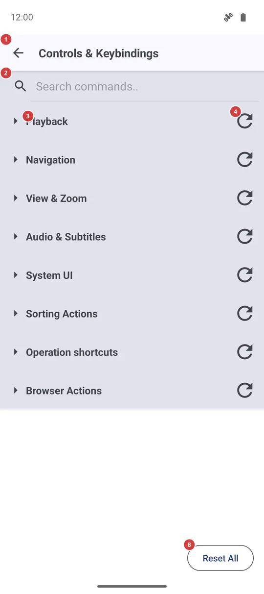
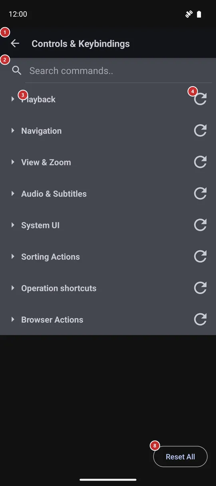

Controls & Keybindings
What this is for
Choose which key, gamepad button or mouse button runs each command - playback, navigation, sorting and browsing. Every command comes with a factory key, so you change only what you want, and you can put it back whenever you like.


In this order
- Open Controls & Keybindings from Settings, on the Management tab. The commands are grouped by purpose, and the groups start folded.
- Find the command: type part of its name in the search field 2, or tap a group title 3 to open the group.
- Press Edit binding 6 on the command's row 5 and pick the device whose key you want to change - Keyboard, Gamepad and so on.
- A window opens 9 and waits. Press the new key or button within the time shown 10 and check what was caught 11.
- If a red message says the key is taken 12, press another one or Cancel 13. Otherwise press Set 14 to save it.
- To go back to the factory key, use the reset on the row 7 for one command, the group reset 4 for a whole group, or Reset All 8 for everything. The last two ask first.
- Changes are saved the moment you make them. Back 1 leaves the screen.
The elements
Top bar and search
1BackLeaves the screen and returns to Settings.
There is nothing to confirm: every change is already saved when you make it.
2Search commands..Narrows the list to the commands that match.
Type part of a command name, such as Next File, or of a key name, and the list shrinks as you type. A group with no match disappears. A folded group with a match shows only its title, so tap it to see the matching rows. Clear the field to bring everything back.
Groups and commands
3Command groupsFolds and unfolds the commands of one group.
Commands are grouped by purpose: Playback, Navigation, View & Zoom, Audio & Subtitles, System UI, Sorting Actions, Operation shortcuts, Browser Actions and, only in builds with a VR runtime, VR Only. Groups start folded; tap a title to open one. The app remembers which groups you left open. On a wide window the rows are set in two columns.
4Reset GroupPuts one group back to its factory keys.
This is the small round-arrow icon at the end of a group title. The app asks whether to reset all bindings in that group to factory defaults, and changes nothing until you press Reset. Only the keys you changed in that group are affected.
- Undo
- Your own keys in that group are lost and the factory ones return. To get a key back, assign it again with Edit binding.
5Command rowA command and the keys that run it.
The command name is on top. Below it are its current keys, each with a mark for the device - keyboard, gamepad, mouse or VR; a dash means no key is set. One command can have keys on several devices at once, so a gamepad button and a keyboard key can do the same thing.
6Edit bindingGives this command a new key or button.
A small menu asks which device to change. Keyboard and Gamepad are always offered, each with its current key or (not set); Mouse and VR appear only when the command already has a key for them. After you pick one, the key capture window opens. The new key takes the place of the old one for that device.
7Reset to defaultPuts this one command back to its factory key.
It works only for a command you have changed; for an untouched command the button is dimmed. It happens at once, without a question.
- Undo
- Your own key for this command is lost and the factory key returns. Assign it again with Edit binding if you want it back.
Reset everything
8Reset AllPuts every command back to its factory keys.
The app asks Reset every binding to factory defaults? This cannot be undone., and nothing changes until you press Reset. Afterwards each command uses its original keyboard, gamepad and mouse buttons.
- Undo
- All your own keys are lost at once and cannot be restored. Assign them again one by one.
Key capture window
9Press a key or button..Tells you the app is waiting for your key.
The window covers the screen and listens for a keyboard key (with Ctrl, Shift or Alt if you hold them), a gamepad button, a stick, trigger or D-pad push, or a mouse button. The system Back key is not taken as a new key.
10CountdownShows how many seconds are left to press a key.
You have 30 seconds. When the time runs out, the window closes on its own and nothing is changed.
11Captured keyShows the key or button the app caught.
It reads Captured: and the name of what you pressed, for example Ctrl+Shift+K for a keyboard key with modifiers. Before you press anything it shows a dash. If the first press was not what you meant, press another key - the last one counts.
12Conflict messageWarns that another command already uses this key.
A red line reads Already bound to: and the names of those commands. While it is shown, Set stays off, so two commands cannot share one key. Press a different key, or cancel and free the other command first.
13CancelCloses the window and changes nothing.
The command keeps its old key. Use it when you opened the window by mistake or the key you wanted is already taken.
14SetSaves the caught key for this command.
The button works only after a key was caught and no other command uses it. It saves the key right away, closes the window and updates the row.